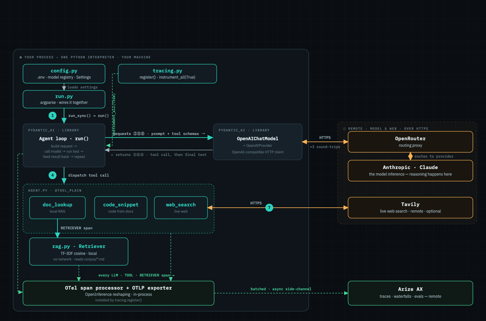

How the code actually runs.
A mental-model reference for the Dev Research Assistant — the runtime path of a query, the Python mechanics underneath, and the offline eval engine. Companion to the interactive architecture diagram.
Two workflows, one codebase
The repo serves two distinct flows. Keep them separate in your head — they share building blocks but answer different questions.
| Workflow | Entry | Question it answers |
|---|---|---|
| Observability | src/run.py | "Run one question — what does the trace look like?" |
| Development / eval | src/dataset.py + src/experiment.py | "Run many questions — how do they score, and how do models compare?" |
The agent is the vehicle. The point is the trace / eval / debug narrative on top of it. Both workflows reuse the same build_agent, Retriever, and setup_tracing — they just drive them differently.
The end-to-end path of one query.
Everything inside the panel runs in one Python process on your machine. The model, the web, and the trace store are three separate remote services over HTTPS. The telemetry channel (green) is fire-and-forget — the agent never waits on Arize.

The call chain
- ①
run.pyparses args, callsget_settings()→setup_tracing()→build_agent()→agent.run_sync(q). - ②⑤⑧ Each model turn: Pydantic AI sends the prompt plus the JSON schemas of the three tools to OpenRouter → Anthropic. The model decides what to do.
- ③⑥⑨ The model returns a structured tool call (e.g.
doc_lookup(query=…)) — or, when done, the final text. - ④ The agent loop runs the tool locally →
rag.pyretrieval (no network). - ⑦ A later turn calls
web_search→ Tavily.
run_sync is just a sync wrapper around the async run() (loop.run_until_complete). The loop is multiple network round-trips: decisions are remote, execution and loop-control are local.
How tracing.py reaches the agent — with no import.
agent.py never imports tracing.py. The link is shared global state, deliberately decoupled, set up in two channels:
| Channel | Set by | Effect |
|---|---|---|
| OTel global provider | register() | Installs a process-wide tracer provider → decides where spans go (Arize). |
| Agent class flag | Agent.instrument_all(True) | Sets state on the Agent class → every instance emits spans. |
Both files do from pydantic_ai import Agent — the same class object in one process. The flag says "emit"; the provider says "send to Arize." You need both.
run.py calls setup_tracing() before build_agent()/run_sync(). Flip it and the agent runs fine but its spans go into a no-op provider — nothing reaches Arize.
This decoupling is what lets tracing.py be the only file that knows the backend. Switch TRACING_BACKEND=ax|phoenix in .env and no agent code changes — that is Arize's OTel/OpenInference neutrality, expressed in the build.
Local vs remote — and what you can see.
All reasoning happens remotely, on the model's servers. Your code owns the menu (which tools exist) and the execution (running them); the model owns the judgment (which tool, what args, when to stop).
Two kinds of "steps" — different visibility
| Kind | Visible? | Why |
|---|---|---|
| Across turns (tool call → result → tool call) | Fully | Each turn is a round-trip your loop orchestrates — every one is a span. |
| Within a turn (model's private reasoning before a tool call) | No (by default) | It's computation inside one API call. You see the decision it landed on, not the deliberation — unless thinking tokens are explicitly enabled (this build doesn't). |
If you import and call web_search("…") in a script, it returns a string but nothing appears in Arize — no loop opened a span around it. Tracing is a property of the loop calling the tool, not of the function.
The model has no native tools to restrict — in your process it can only request a call from the menu you defined; it can't execute anything itself.
Who emits which span.
Spans don't travel back through the agent as data. When any span ends, the OTel SDK hands it to the processor automatically via the global provider. The real question is who creates each span — and there are two answers.
| Span | Emitted by | Mechanism |
|---|---|---|
| LLM, TOOL | Pydantic AI's agent loop | Auto-instrumentation wraps each model call / tool call. Your tool functions contain zero tracing code. |
| RETRIEVER | rag.py, directly | Manual: retrieve() opens its own span and writes document.id/content/score attributes. |
The loop can see the tool call (it wrapped it), but to the loop, doc_lookup is an opaque function returning a string. The "retrieval" concept — documents + scores — only exists if you instrument it. So that one span is hand-written. It nests under the TOOL span via OTel context.
Closures — why the tools need no retriever argument.
A closure is a function plus the variables it references from the scope it was defined in, kept alive after that scope exits.
def build_agent(label=None, dropped_docs=None):
retriever = Retriever(dropped_docs=dropped_docs) # local var
@agent.tool_plain
def doc_lookup(query: str) -> str:
return format_results(retriever.retrieve(query)) # captures retrieverdoc_lookup takes only query (all the model supplies), yet still reaches retriever — via the closure. Two payoffs:
- No need to thread
retrieverthrough as an arg → it can betool_plain(no run-context). - It's what makes Phase-4 failure injection work: each
build_agent(dropped_docs=…)creates a fresh retriever, and a freshdoc_lookupclosed over that degraded one.
Decorators — what @agent.tool_plain really does.
The @ is pure syntax sugar. This:
@agent.tool_plain
def doc_lookup(query): ...is exactly:
doc_lookup = agent.tool_plain(doc_lookup) # call the agent's method on the functiontool_plain is a register decorator (not a wrap): it inspects the signature + docstring to build the tool's JSON schema, registers it on this agent, and returns the function unchanged.
Inheritance is why agent has a tool_plain method at all — it's defined on the AbstractAgent base and inherited by Agent (same place run_sync lives). Decoration is what that method then does to your function (f = D(f)). Two layers meeting on one line.
Why "_plain": it tells the framework the calling convention. tool_plain → call with only the model's args. tool → inject a RunContext first (for tools that need run state).
Direct vs agent-driven invocation.
Same function, two callers. The difference isn't "decorated vs not" — the decorator's registration already happened at definition time. The difference is who calls it, which determines whether the orchestration runs.
| Path A · you call it | Path B · agent loop calls it | |
|---|---|---|
| Function body runs | ✓ | ✓ |
| LLM call / OpenRouter | ✗ | ✓ |
| Arg validation vs schema | ✗ | ✓ |
| LLM + TOOL spans | ✗ | ✓ |
| RETRIEVER span (manual) | ✓ *if tracing on | ✓ |
| Retry / error-to-model | ✗ | ✓ |
Because the tools are closures, "calling separately" means calling the logic they wrap:
# Path A — inspect retrieval with no LLM, no agent
from src.rag import Retriever, format_results
hits = Retriever().retrieve("how do I trace a pydantic ai agent?")
print(format_results(hits)) # same string doc_lookup returns
# Path A — reproduce the Phase-4 failure offline
Retriever(dropped_docs={"arize-tracing.md"}).retrieve("send traces to arize")
# Path B — the real flow; model decides, loop orchestrates, traces land in AX
setup_tracing(get_settings())
agent = build_agent()
print(agent.run_sync("How do I send traces to Arize?").output)Dataset → experiment → judge.
The other half of src/. Where run.py is "one question, look at the trace," this is "many questions, scored, repeatable, comparable."
data/golden.jsonl ──▶ dataset.py ──▶ AX dataset "dev-research-golden"
│
client.experiments.run(task, evaluators=[…])
│
per row: task(row) ─▶ agent.run(q) ─▶ {answer, context}
│
correctness_eval ─▶ judge ─▶ score 0..1, pass/fail
groundedness_eval ▶ judge ─▶ score 0..1, grounded/hallucinatedStage 1 — the golden dataset
12 hand-written rows: a question + the expected_keypoints a good answer must hit (checkable claims, not a full reference answer). get_or_create_dataset() is idempotent — uploaded once, then referenced by name.
Stage 2 — the task
async def task(dataset_row) -> dict:
result = await agent.run(dataset_row["question"])
context = format_results(retriever.retrieve(dataset_row["question"]))
return {"answer": result.output, "context": context}- Async, not
run_sync— the executor runs tasks inside a live event loop;run_syncwould raise "can't callasyncio.run()from a running loop." - Returns
{answer, context}— the two judges need different inputs.
The task re-runs retrieval to capture context, even though the agent already retrieved internally. Pydantic AI doesn't surface the tool's return value cleanly, so context is reconstructed. It's an approximation — fine because retrieval is deterministic, but the judge sees roughly what the agent saw, not exactly.
Two ingestion channels (again)
setup_tracing() runs here too, so the agent runs during the experiment are also traced. One experiment produces two streams into AX: OTel traces (ingest key) and experiment scores (developer/GraphQL key). Same two-key split as config.py.
The two eval lenses.
The judge is a separate LLM call — raw openai SDK via OpenRouter, temperature=0, asked to reply with strict JSON {score, explanation} (with defensive parsing, because models don't always comply). The agent answers; the judge grades.
| Eval | Compares | Catches |
|---|---|---|
| correctness | answer ↔ expected key points | Did it say the right things? (completeness) |
| groundedness | answer ↔ retrieved context | Is every claim supported by the docs it had? (hallucination) |
They measure orthogonal failures. An answer can be correct but ungrounded (right facts from memory, not the docs) or grounded but incorrect (faithful to weak context, misses the point). Both prompts reward admitting ignorance over fabricating — the exact behavior the agent's system prompt demands.
The payoff — model-swap
Run the same dataset + judges with a different agent model:
python -m src.experiment --model claude --full # run "claude-full"
python -m src.experiment --model gpt --full # run "gpt-full"AX shows the two runs side by side with correctness/groundedness columns — a head-to-head on identical questions and judges. That's provider-neutrality made concrete. Append --dropped-docs arize-tracing.md and the run name gets -degraded: same experiment, starved corpus, and you watch groundedness drop against a clean baseline.
Mental-model cheat sheet.
- The agent is the vehicle; the trace / eval / debug narrative is the point.
- Decisions are remote, execution + loop-control are local. The model owns judgment; you own the menu and the hands.
run_sync= sync wrapper over the asyncrun(). One engine, two front doors.- Tracing links via two globals, not an import: the OTel provider (where) + the
Agentclass flag (emit). Set up before building the agent. - Spans: auto for LLM/TOOL (the loop), manual for RETRIEVER (rag.py). They reach the exporter via the global provider, not through the agent.
- Closures let tools skip a
retrieverarg and power the failure-injection knob. @tool_plain= register + describe. Inheritance gives the method; decoration registers the function; the loop adds validate/trace/retry when it calls the tool.- Same function, the difference is the caller. Direct = raw logic. Agent-driven = logic + orchestration.
- Eval engine: golden dataset → async task → two LLM-judge lenses (correctness, groundedness) → compare runs. Model-swap and degraded-corpus are just different run names over the same harness.
- Two keys, two doors: ingest key for traces, developer key for datasets/experiments.